python --version
python -m pip show scikit-learn xgboost
python -m pip show numpy pandas matplotlib
python -c "import sys; print(sys.executable)" # 지금 쓰는 파이썬이 .venv인지 확인
⚠️ 전날 환경(.venv) 그대로. 설치가 필요한 경우에만 강사 검증 버전(Python 3.13.5 · NumPy 2.3.5 · pandas 2.2.3 · scikit-learn 1.8.0 · XGBoost 3.1.3 · Matplotlib 3.10.8)에 맞춰요. 오늘은 GPU가 필요 없고, CUDA·PyTorch를 임의로 업데이트하지 않아요. 최종 제출에는 실제 설치 버전을 기록해요.
🤔 왜 sys.executable을 확인하지? — 컴퓨터에 파이썬이 여러 개 있으면, 패키지를 깔은 파이썬과 코드를 돌리는 파이썬이 다를 수 있어요. 지금 실행 중인 파이썬의 경로가 프로젝트 .venv 안인지 보면 "설치했는데 import가 안 돼요" 문제를 바로 잡을 수 있어요.
💡 오늘의 평가 계획: train 60은 5-fold로 후보 비교(전처리도 fold 안에서) · valid 20은 개발 중 진단(최종 독립 점수 아님) · 설정 확정 후 새 Pipeline을 개발 80건으로 재학습 · test 20은 고정 버전으로 한 번 평가. 기본 경로는 실패 클래스 F1로 선택, 임계값은 처음부터 0.5로 고정해요.
이거 어디에 써?
"좋은 모델"의 기준은 업무마다 달라요. 실패를 놓치면 큰일인지, 괜한 경고가 비싼지에 따라 볼 지표가 바뀌어요.
🏥
놓치면 큰일질병·장애 탐지 → Recall 우선
📨
경고가 비쌈사람이 확인해야 하는 알림 → Precision
🧩
정답 없이 묶기비슷한 요청·고객끼리 그룹 (K-Means)
🔒
최종 보고선택을 잠그고 test로 한 번 확인
상황
우선 검토
같이 확인할 것
실패를 놓치면 손실이 크다
Recall
오탐 수 · 처리 인력 · Precision
경고마다 사람의 확인 비용이 든다
Precision
놓친 실제 실패 수 · Recall
두 오류를 함께 줄이고 싶다
F1
FP · FN 건수와 실제 비용
실행 시간(숫자)을 예측한다
MAE · RMSE
단위(ms) · 큰 잔차 · 자료 범위
🤔 왜 지표를 먼저 정하지? — 실패를 놓치는 것(FN)과 괜한 경고(FP)는 서로 다른 비용이에요. 어떤 실수가 더 아픈지 정하지 않고 결과부터 보면, 점수가 좋게 나온 지표를 골라 "잘했다"고 말하게 돼요. 지표 선택은 정답 하나를 찾는 게 아니라 실패의 비용과 운영 조건을 적는 일이에요.
① 분류 지표 — 분모가 다르다
양성 = 실패(1). 행 = 실제, 열 = 예측. (설명용 20건)
예측 0 · 성공
예측 1 · 실패
실제 0 · 성공
TN 10 · 정상 통과
FP 4 · 오탐
실제 1 · 실패
FN 4 · 놓침
TP 2 · 실패 발견
지표
공식
질문
예시
Accuracy
(TP + TN) / 전체
전체 중 몇 개 맞혔나?
12/20 = 0.600
Precision
TP / (TP + FP)
"실패"라고 경고한 것 중 진짜는? (오탐↑ → 낮아짐)
2/6 = 0.333
Recall
TP / (TP + FN)
진짜 실패 중 몇 개 찾았나? (놓침↑ → 낮아짐)
2/6 = 0.333
F1
2·P·R / (P + R) = 2TP / (2TP + FP + FN)
둘의 균형 (조화평균)
4/12 = 0.333
💡 Precision과 Recall이 둘 다 0.333이어도 의미가 달라요. "경고 6건"과 "실제 실패 6건"은 서로 다른 집합이에요. F1은 조화평균이라 한쪽이 낮으면 같이 낮아지고, TN은 반영하지 않아요.
⚠️ 정확도 함정 — 실제 성공 14 · 실패 6인데 전부 "성공"으로 찍으면 Accuracy = 0.70, Recall = 0, F1 = 0. "60% 정확도"와 "실패 60% 발견"은 전혀 다른 말이에요.
🤔 왜 분모가 중요하지? — Precision의 분모는 "내가 실패라고 말한 것"(TP+FP)이라 헛경고가 늘면 떨어지고, Recall의 분모는 "실제로 실패였던 것"(TP+FN)이라 놓침이 늘면 떨어져요. 같은 TP 2건이라도 어느 집합으로 나누느냐에 따라 질문 자체가 달라요. Accuracy는 분모가 전체(20)라, 많은 쪽(성공 14)만 맞혀도 점수가 올라가서 드문 실패를 찾는 문제에선 속기 쉬워요.
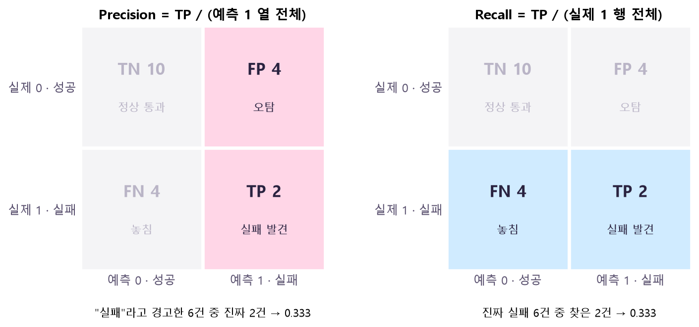
무엇을 보나: 같은 혼동행렬을 두 번 그리고, 각 지표가 쓰는 칸만 색칠했어요. Precision은 세로 열(예측 1 = 경고한 것: FP+TP), Recall은 가로 행(실제 1 = 진짜 실패: FN+TP)이에요. 🤔 왜? 둘 다 분자는 TP 2로 같지만, 나누는 집합이 "내가 경고한 6건"이냐 "실제 실패 6건"이냐로 달라요. 그래서 FP가 늘면 왼쪽만, FN이 늘면 오른쪽만 나빠져요. 회색 TN은 어느 쪽에도 안 들어가요.
🤔 왜 F1은 산술평균이 아니라 조화평균이지? — Precision 1.0, Recall 0.01인 모델(경고 1번만 해서 맞힘)을 산술평균하면 0.505로 그럴듯해 보여요. 조화평균은 2×1×0.01/(1+0.01) ≈ 0.02예요. 한쪽이 낮으면 같이 낮아지게 만들어서, 한 지표만 극단적으로 올리는 꼼수를 막아요.
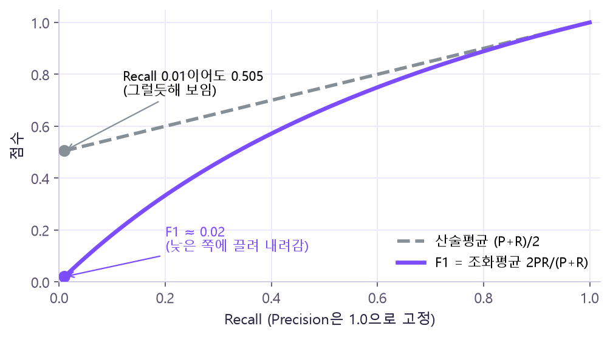
무엇을 보나: Precision을 1.0에 고정하고 Recall만 바꿨을 때의 두 평균이에요. 회색 점선(산술평균)은 Recall이 0이어도 0.5에서 시작하지만, 보라 F1은 0에서 시작해요. 🤔 왜? 조화평균은 작은 값에 강하게 끌려가요. 한쪽 지표가 0에 가까우면 다른 쪽이 아무리 높아도 F1이 바닥이라, "경고 한 번만 해서 Precision 1.0 만들기" 같은 꼼수가 안 통해요. 둘이 같아질수록(오른쪽 끝) 두 선이 만나요.
cm = confusion_matrix(y, pred, labels=[0, 1])
tn, fp, fn, tp = cm.ravel() # 이 순서로 풀림!
② ROC-AUC와 임계값
모델이 낸 값
운영에서 내릴 판단
predict_proba → 클래스별 추정 확률. 실패(1) 열은 classes_로 확인
확률이 임계값을 넘으면 실패. 기본 정책: p > 0.5이면 1, p = 0.5이면 0
ROC-AUC에는 이 연속 점수를 넣음
임계값은 모델·자료와 함께 평가 전에 고정할 설정
ROC 곡선: 임계값을 1 → 0으로 내리면서 찍은 점들.
가로축 FPR = FP / (FP + TN) 성공 요청 중 잘못 경고한 비율
세로축 TPR = TP / (TP + FN) 실제 실패 중 찾아낸 비율 (= Recall)
AUC = 곡선 아래 넓이 = "실패 1건 · 성공 1건을 뽑았을 때 실패 점수가 더 높을 확률"
실제
점수
비교
성공 0
0.10
실패 0.35, 0.80보다 낮음 ✅✅
성공 0
0.40
실패 0.35보다 높음 ❌, 0.80보다 낮음 ✅
실패 1
0.35
양성·음성 2×2 = 4쌍 중 3쌍에서 양성 점수가 높음 → AUC = 0.75
실패 1
0.80
🤔 왜 AUC는 "순위" 평가지? — AUC는 실패·성공을 한 쌍씩 짝지어 "실패 쪽 점수가 더 높은가"만 세요(동률 없음 기준). 점수의 크기가 아니라 순서만 보니까, 임계값을 어디에 두든 순서는 그대로라 AUC도 그대로예요. 그래서 0/1 클래스를 넣으면 순서 정보가 사라져 의미가 없고, 연속 점수(predict_proba의 실패 열)를 넣어야 해요. 또 짝을 지으려면 두 클래스가 모두 있어야 하니, 한 클래스뿐인 자료에선 계산할 수 없어요(0으로 위장하지 말고 None + 실제 양성 수 기록).
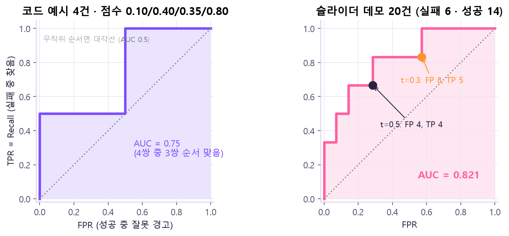
무엇을 보나: 왼쪽은 아래 코드의 4건, 오른쪽은 아래 슬라이더의 20건으로 그린 ROC 곡선이에요. 칠해진 넓이가 AUC(0.75, 0.821)이고, 점선 대각선은 무작위 순서(0.5)예요. 오른쪽 점 두 개는 임계값 0.5·0.3이 곡선 위 어디에 서 있는지 보여 줘요. 🤔 왜? 곡선은 임계값을 1에서 0으로 내리며 "실패 하나 잡을 때마다 위로, 성공 하나 잘못 경고할 때마다 오른쪽으로" 한 칸씩 걸은 발자국이에요. 점수 순서만으로 걸음이 정해지니, 임계값은 곡선 위의 한 점을 고르는 것일 뿐 곡선(AUC)을 바꾸지 않아요.
🤔 왜 확률 0.8 ≠ "80% 실패"지? — 모델이 낸 확률은 "추정치"라서, 실제로 0.8짜리 요청들 중 80%가 실패하는지는 따로 검증(확률 보정)해야 알아요. 기본 정책은 p > 0.5면 실패, 정확히 0.5면 성공으로 미리 적어 두어 경계에서 헷갈리지 않게 해요.
아래 슬라이더로 임계값을 바꿔 보세요. AUC는 그대로인데 FP·FN·F1·비용은 바뀌어요. (설명용 가상 점수 20건 · 실패 6건 · 비용 = FP + 5×FN은 가정)
무엇을 보나: 슬라이더와 같은 20건으로 임계값을 0.05씩 옮긴 결과예요. 왼쪽: 선을 올리면 주황 FP는 내려가고 빨간 FN은 올라가며, 가정한 비용(FP + 5×FN)은 t=0.25에서 가장 작아요. 오른쪽: F1은 t마다 오르내리지만 분홍 AUC는 수평선이에요. 🤔 왜? FN 한 건을 FP 다섯 건과 같은 값으로 쳤으니, 비용 곡선은 FN이 생기기 시작하는 지점 바로 앞에서 바닥을 쳐요. 비용 비율을 바꾸면 그 바닥 위치도 옮겨 가요. 임계값은 이렇게 오류 비용으로 정하는 운영 규칙이고, valid에서만 골라요.
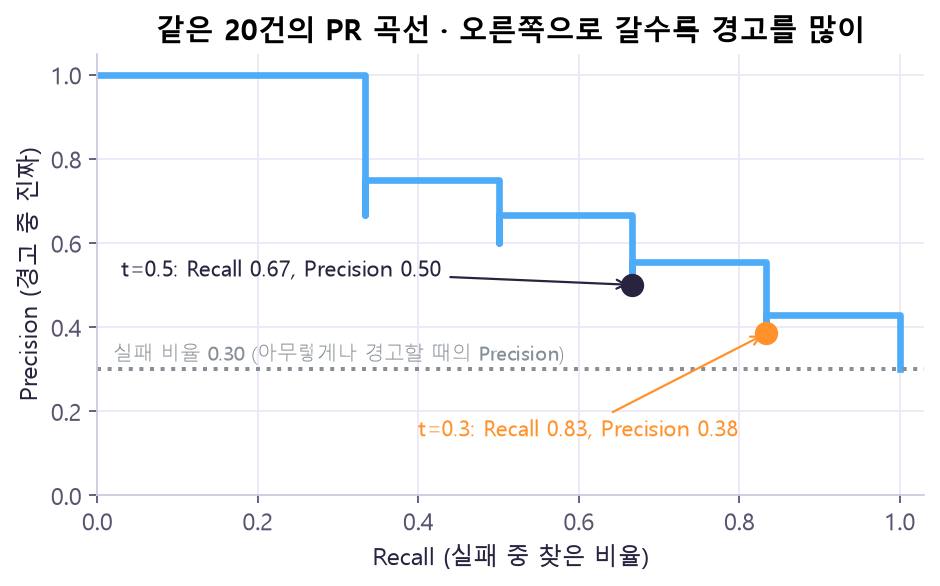
무엇을 보나: 같은 20건을 Recall(가로)-Precision(세로)로 다시 그린 PR 곡선이에요. 오른쪽으로 갈수록 경고를 많이 해서 실패를 더 찾지만 Precision이 내려가요. 점선 0.30은 아무렇게나 경고할 때의 Precision(실패 비율)이에요. 🤔 왜? ROC의 가로축(FPR)은 흔한 성공 14건으로 나누니 오탐이 몇 건 늘어도 티가 덜 나요. PR은 "경고한 것 중 진짜"를 직접 보여 줘서, 실패가 드문 불균형 자료에서 경고의 질을 더 솔직하게 드러내요. t=0.3은 실패를 5/6 찾는 대신 경고의 62%가 오탐이에요.
③ RMSE와 교차검증 점수 집계
RMSE = √ mean((y − ŷ)²) 오차 → 제곱 → 평균 → 제곱근 · 단위는 정답과 같음(ms)
모델
예측 (실제 100, 200, 300, 400)
MAE
RMSE
A
100, 200, 300, 480 (한 번 크게)
20 ms
40 ms
B
130, 230, 330, 430 (고르게)
30 ms
30 ms
💡 MAE는 평균적인 절대 오차, RMSE는 큰 오차에 더 민감해요. 평균만 보지 말고 큰 잔차의 실제값·예측값·ID를 확인해요. 회귀 점수와 분류 F1은 합쳐서 평균 내지 않아요.
from sklearn.metrics import mean_absolute_error, root_mean_squared_error
y = [100, 200, 300, 400]
a = [100, 200, 300, 480]
b = [130, 230, 330, 430]
for name, pred in [("A", a), ("B", b)]:
print(name, mean_absolute_error(y, pred), root_mean_squared_error(y, pred))
# A 20.0 40.0 / B 30.0 30.0
🤔 왜 A는 MAE로 이기고 RMSE로 지지? — A의 오차는 (0, 0, 0, 80): MAE = 80/4 = 20, RMSE = √(80²/4) = √1600 = 40. B는 (30, 30, 30, 30): 둘 다 30. 제곱하면 큰 오차 80이 6400으로 커져 혼자 평균을 끌어올리니, "한 번 크게 틀리는" A가 RMSE에서 불리해요.
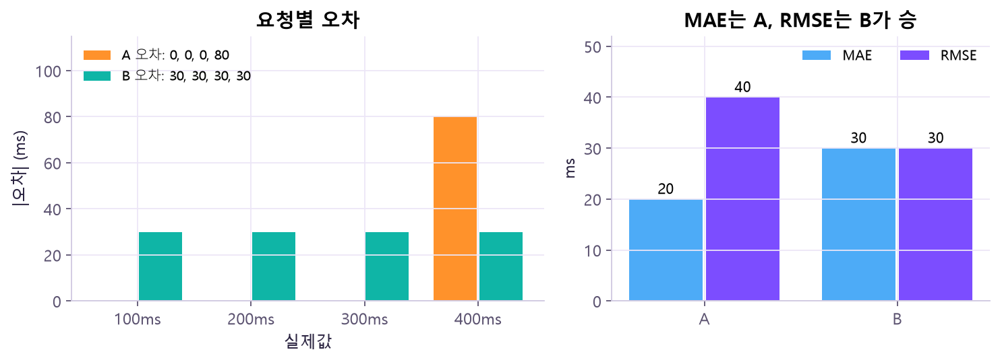
무엇을 보나: 왼쪽은 실제값별 오차예요. A는 마지막 요청에서만 80 틀렸고, B는 매번 30씩 틀렸어요. 오른쪽에서 MAE는 A(20) < B(30), RMSE는 A(40) > B(30)로 순위가 뒤집혀요. 🤔 왜? RMSE는 제곱 평균이라 80이 6400으로 부풀어 혼자 평균을 끌어올려요. "가끔 크게 틀리는" 모델과 "늘 조금씩 틀리는" 모델 중 무엇이 더 나쁜지는 업무가 정할 일이라, 주 지표를 미리 고르고 큰 잔차의 행을 따로 확인해요.
집계 방법
뜻
주의
fold 점수 평균 ± 표준편차
예: F1 0.522 ± 0.209 → 분할에 따라 흔들렸다는 진단 근거
95% 신뢰구간이 아님
OOF 예측을 합쳐 한 번 계산
각 행을 그 행을 학습하지 않은 모델로 예측해 모음
fold 평균과 다를 수 있음 (RMSE 2·10 → 평균 6, 합친 값 약 7.21)
🤔 왜 평균 6인데 합치면 7.21이지? — RMSE는 "제곱 평균 → 루트"라 직선이 아니에요(비선형). 같은 크기 두 fold의 제곱오차 평균은 2²=4, 10²=100이라, 합치면 √((4+100)/2) = √52 ≈ 7.21. 반면 루트를 씌운 뒤 평균 내면 (2+10)/2 = 6. F1도 분모가 fold마다 달라서 마찬가지예요. 그래서 무엇을 어떻게 평균 냈는지 적고, 서로 다른 계산의 숫자를 같은 열에 섞지 않아요.
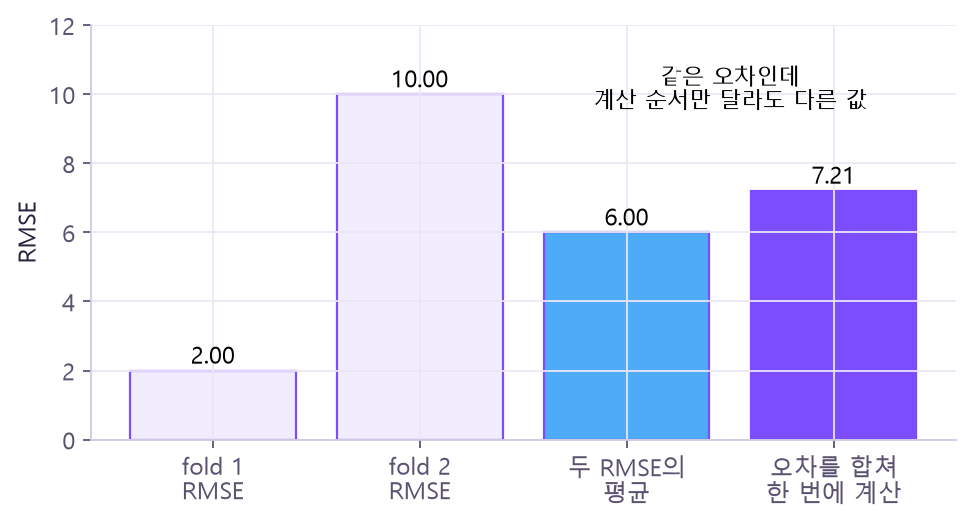
무엇을 보나: 같은 두 fold(RMSE 2, 10)를 두 방식으로 요약했어요. 각 fold의 RMSE를 평균하면 6.00, 두 fold의 제곱오차를 먼저 합친 뒤 한 번에 RMSE를 내면 7.21이에요. 🤔 왜? 루트(√)는 큰 값을 덜 키우는 곡선이라 "루트 먼저 → 평균"과 "평균 먼저 → 루트"의 결과가 달라요. 둘 다 틀린 계산이 아니라 질문이 다른 계산이니, 보고서에 어떤 방식인지 적고 한 열에 섞지 않아요.
🤔 왜 "평균 ± 표준편차"가 신뢰구간이 아니지? — 5개 fold는 같은 60건에서 학습 자료를 서로 많이 나눠 쓰기 때문에 독립적인 5번의 실험이 아니에요. 표준편차는 "분할에 따라 이만큼 흔들렸다"는 진단 기록이지, 진짜 성능이 그 범위 안에 있을 확률을 말해 주지 않아요.
자료 구조
검토할 분할
추가 검사
독립 요청 · 분류
StratifiedKFold
fold별 양성 수 · ID 교집합
같은 고객·요청의 반복 행
GroupKFold 등
같은 그룹이 학습/평가 양쪽에 없는가
시간 순서 · 미래 예측
TimeSeriesSplit 등
미래 자료가 과거 학습에 들어오지 않는가
고른 최고 점수의 낙관성
별도 최종 test / 필요하면 nested CV
선택용 자료와 최종 평가의 역할 구분
💡 분할 방법은 점수가 잘 나오는 걸로 고르지 않고, 실제로 예측할 상황에 맞춰 정해요.
🤔 왜 상황마다 분할이 다르지? — 평가는 "실전과 같은 조건의 시험"이어야 해요. 같은 고객의 행이 학습·평가에 나뉘어 들어가면, 모델이 그 고객을 이미 "외운" 상태로 시험을 보게 돼요(그룹 분할 필요). 미래를 예측하는데 미래 자료로 학습하면 실전에선 불가능한 정보를 쓰는 셈이에요(시간 분할 필요).
🤔 왜 log를 씌우지? — 글자수는 수백~수천처럼 범위가 넓고 큰 값 쪽으로 길게 늘어져요. log를 씌우면 99 → 4.605, 999 → 6.908처럼 10배 차이가 약 2.3 차이로 완만해져서, 몇 개의 아주 긴 요청이 계수·거리를 휘두르지 않게 돼요. log1p(= log(1+x))를 쓰는 이유는 글자수 0에서도 log(1)=0으로 안전하기 때문이에요(그냥 log(0)은 −∞).
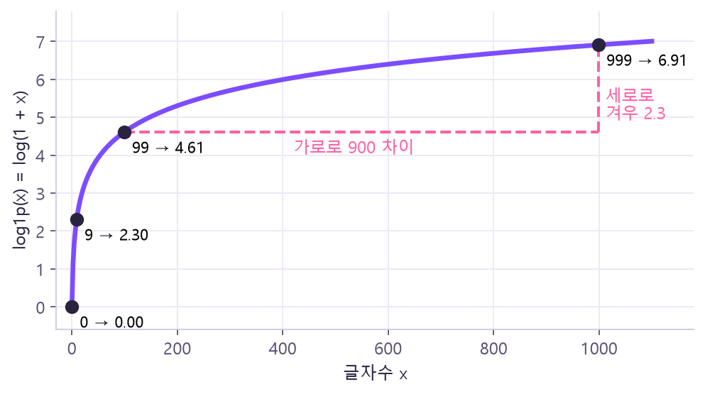
무엇을 보나: log1p 곡선 위에 0·9·99·999를 찍었어요. 99에서 999까지 가로로 900을 가도 세로로는 4.61 → 6.91, 겨우 2.3만 올라가요. 🤔 왜? 로그는 "몇 배인가"를 "몇 칸인가"로 바꿔요. 10배씩 커질 때마다 약 2.3씩 같은 간격으로 올라가니, 큰 값끼리의 차이는 눌리고 작은 값 쪽 차이는 살아나요. x=0에서도 log(1)=0이라 안전하고요.
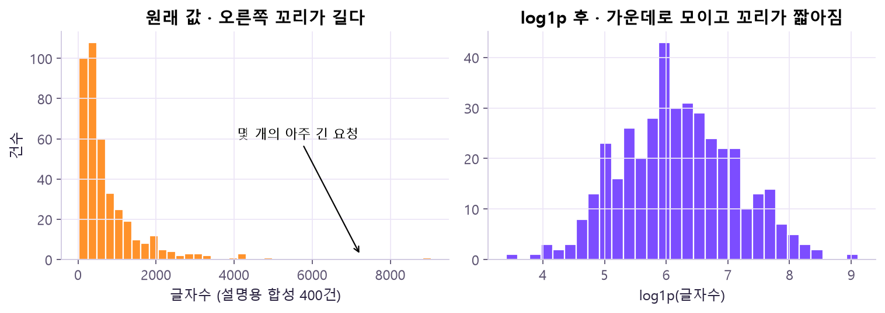
무엇을 보나: 오른쪽 꼬리가 긴 설명용 합성 글자수 400건(왼쪽)이 log1p 후(오른쪽) 가운데로 모인 종 모양에 가까워졌어요. 🤔 왜? 아주 긴 몇 개 요청(왼쪽 그림 오른쪽 끝)이 log 눈금에선 다른 값들과 가까워져서, 계수·거리를 혼자 휘두르지 못해요. 참고로 수업 자료의 글자수는 203~2381로 이렇게 심하게 치우치진 않아서 log 효과가 크지 않을 수 있어요 — 그래서 같은 조건 비교로 확인해요.
🤔 왜 비율 특성을 만들지? 왜 +1? — "글자수가 많은데 쓸 수 있는 도구는 적다" 같은 두 입력의 관계는 원본 열 하나씩만 봐서는 선형 모델이 잘 못 잡아요. 비율로 만들어 주면 그 관계를 한 열로 직접 보여 줄 수 있어요. 분모에 1을 더한 건 도구 수가 0일 때 0으로 나누는 오류(무한대)를 막기 위한 명시적 설계 선택이에요. 성능이 좋아질지는 같은 조건 비교로 따로 확인해요.
행별로 계산 가능한 규칙
자료에서 추정하는 변환
log1p(글자수), 글자수 / (1 + 도구수) — 한 행의 사전 입력만 사용
중앙값·평균·표준편차, 범주 목록, 특성 선택, PCA, K-Means
그래도 Pipeline에 넣어 학습·추론 규칙을 일치시킴
반드시 학습 자료(fold 학습 부분)에서만 fit
⚠️ 정답을 쓰지 않는 비지도 변환이라도 평가 자료로 fit하면 누수예요. 수치 결측을 "전체 자료 중앙값"으로 먼저 채우는 것도 안 돼요. 정답을 이용하는 인코딩·특성 선택은 더 엄격한 누수 방지 절차가 필요해요.
🤔 왜 행별 규칙도 Pipeline에 넣지? — log1p나 비율은 한 행만 보고 계산하니 누수는 없어요. 그래도 Pipeline 밖에서 손으로 만들면, 나중에 새 요청을 예측할 때 똑같이 만드는 걸 잊거나 식이 조금 달라질 수 있어요. Pipeline 안에 두면 학습 때와 추론 때 같은 규칙이 자동으로 적용돼요. 반대로 중앙값·표준편차·범주 목록·K-Means 중심처럼 자료에서 배우는 값은 반드시 학습 부분에서만 fit해야 해요.
무엇을 보나: 새 특성을 만드는 분홍 상자가 Pipeline 맨 앞 단계로 들어가 있어요. 4열 → 6열 → 10열로 늘어나며 모델까지 한 줄로 흘러가요. 🤔 왜? 분홍 상자는 한 행만 보고 계산하니 누수 걱정은 없지만, Pipeline 안에 있어야 새 요청을 예측할 때도 똑같은 식이 자동으로 붙어요. 보라 상자(중앙값·평균·표준편차)는 자료에서 배우는 값이라, fold마다 학습 부분으로만 fit되는 것도 이 구조 덕분이에요.
초기화 K개 중심 선택 (k-means++)→할당 각 점 → 가장 가까운 중심→갱신 중심 = 소속 점들의 평균→반복 안정되면 종료
목표는 각 점에서 소속 중심까지 제곱거리의 합(inertia)을 줄이는 것. 초기값에 따라 결과가 달라질 수 있어서 여러 번 시도(n_init)해요.
🤔 왜 "할당 → 평균으로 이동"을 반복하면 되지? — 중심이 정해져 있으면 각 점을 가장 가까운 중심에 붙이는 게 제곱거리를 가장 줄이는 방법이고, 묶음이 정해져 있으면 그 묶음의 평균이 제곱거리 합을 가장 작게 만드는 중심이에요. 두 단계 모두 inertia를 줄이거나 그대로 두니 언젠가 멈춰요. 다만 처음 중심을 어디 두었느냐에 따라 "그럭저럭 괜찮은 곳"에서 멈출 수 있어서, 여러 번 시작해 보고 가장 좋은 걸 고르는 거예요(n_init).
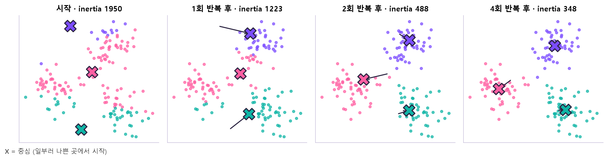
무엇을 보나: 합성 자료에서 일부러 나쁜 곳에 중심 3개(X)를 놓고 시작했어요. 점 색은 "지금 가장 가까운 중심"이고, 화살표는 중심이 소속 점들의 평균 위치로 옮겨 간 길이에요. 위쪽 숫자 inertia가 1950 → 348로 줄어요. 🤔 왜? 할당 단계에선 각 점이 더 가까운 중심으로 갈아타고, 갱신 단계에선 중심이 자기 점들의 한가운데로 옮겨요. 두 단계 모두 제곱거리 합을 줄이기만 하니, 몇 번 만에 더 움직일 곳이 없어 멈춰요. 시작점이 나쁘면 엉뚱한 곳에서 멈출 수도 있어 n_init으로 여러 번 시작해요.
⚠️ 군집 0·1·2는 순서나 성공/실패 의미가 없는 이름표예요. 0과 1을 바꿔도 같은 묶음. "군집 2가 더 위험하다" 같은 해석은 금지.
🤔 왜 번호에 의미가 없지? — K-Means는 정답 y를 전혀 보지 않고 "가까운 것끼리"만 묶어요. 번호는 계산 순서상 붙은 이름표라 0과 1을 바꿔도 묶음은 똑같아요. 성공/실패나 위험도는 학습에 들어간 적이 없으니, 번호에서 그런 의미를 읽을 수 없어요.
평가
뜻
주의
inertia
군집 안의 거리 (작을수록 촘촘)
K를 늘리면 거의 항상 작아짐 → 최솟값만으로 K 결정 금지
silhouette
같은 군집과의 거리 vs 다른 군집과의 거리 (−1 ~ 1, 높을수록 분리 좋음)
군집 2개 이상 · 표본 수 미만 필요. 높아도 업무적 의미는 별도
K
inertia
silhouette
2
69.864
0.392
3
40.430
0.453
4
30.374
0.445
🤔 왜 inertia만으로 K를 고르면 안 되지? — 군집을 늘리면 각 점이 더 가까운 중심을 갖게 되니 inertia는 거의 항상 줄어요(K = 점 개수면 0). 그래서 "작을수록 좋다"로 고르면 늘 큰 K가 이겨요. silhouette는 "내 군집과는 가깝고 옆 군집과는 먼가"를 같이 보니, 쓸데없이 쪼갠 군집은 옆 군집과도 가까워져 점수가 떨어져요. 이 자료에선 K=4가 inertia는 작지만 silhouette는 K=3(0.453)이 가장 높아서 K=3으로 설명해요. 이건 이 train 60·이 전처리의 교육용 결과이지, 새 자료에서도 K=3이 최선이라는 뜻은 아니에요.
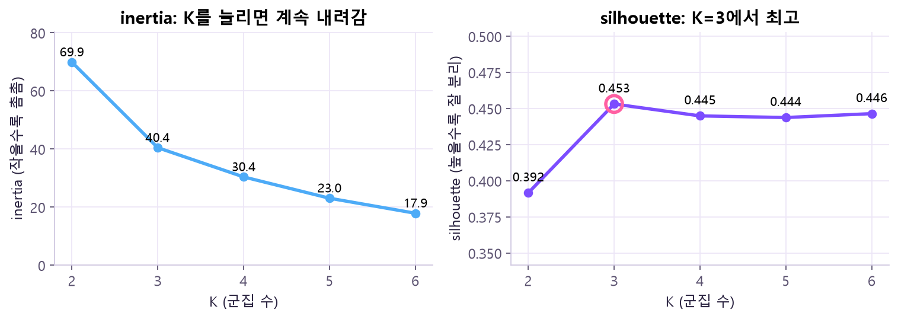
무엇을 보나: 수업 train 60건(결측 대체 + 표준화)으로 K=2~6을 직접 계산했어요. K=2·3·4 값은 위 표와 같아요. 왼쪽 inertia는 K를 늘릴수록 계속 내려가고, 오른쪽 silhouette는 K=3(0.453)에서 꼭대기를 찍은 뒤 0.44대에 머물러요. 🤔 왜? 중심이 많을수록 모든 점이 더 가까운 중심을 가지니 inertia는 당연히 줄어요 — 그래서 "작을수록 좋다"로 고르면 늘 큰 K가 이겨요. silhouette는 "내 군집과 가깝고 옆 군집과 먼가"를 보니, 한 덩어리를 억지로 쪼개면 옆 군집과도 가까워져 더 오르지 않아요.
K=3 결과: 군집별 개수 24 / 19 / 17, inertia 40.430. 중심(원래 단위로 읽기): 군집0 약 1542자·도구 4.12 / 군집1 약 1430자·도구 1.37 / 군집2 약 445자·도구 2.71. 도구 수가 소수인 건 군집 내부 평균이라서예요. 중심은 결측 대체 후 좌표의 평균이라 "실제 사용한 도구 수"나 "성공률"로 해석하지 않아요.
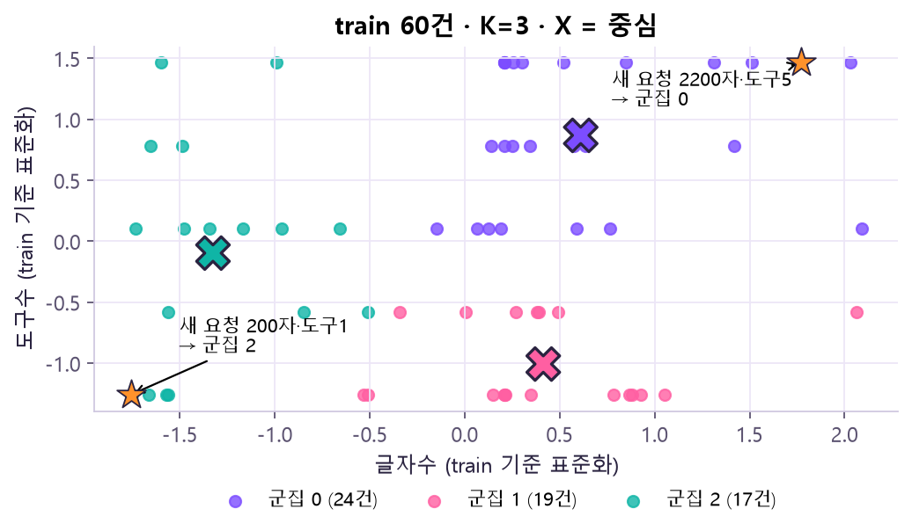
무엇을 보나: 표준화된 글자수(가로)·도구수(세로) 공간의 train 60건이에요. 색은 군집, 큰 X는 중심, 주황 별은 새 요청 2개(200자·도구1, 2200자·도구5)예요. 각각 가장 가까운 중심인 군집 2와 0에 할당돼요. 🤔 왜? 도구수는 1~5 정수라 점들이 가로줄로 늘어서요. 군집은 대략 "짧은 글"(초록), "길고 도구 적음"(분홍), "길고 도구 많음"(보라)으로 나뉘었는데, 이건 거리로만 묶은 결과라 성공/실패 의미는 없어요. 새 요청은 predict로 기존 중심에만 붙이고 중심은 그대로예요.
선택 train60 CV · valid는 진단→동결 모델·특성·임계값 0.5 기록→재학습 새 Pipeline을 개발 80건으로→최종 보고 test20 transform · predict
후보 (사전 선언 7개)
CV F1
fold 표준편차
valid F1
Dummy
0.000
0.000
0.000
Logistic
0.522
0.209
0.333
KNN3
0.336
0.176
0.545
Tree
0.542
0.124
0.333
Forest
0.280
0.254
0.222
XGBoost
0.500
0.123
0.182
Logistic + 파생 2개
0.551
0.190
0.182
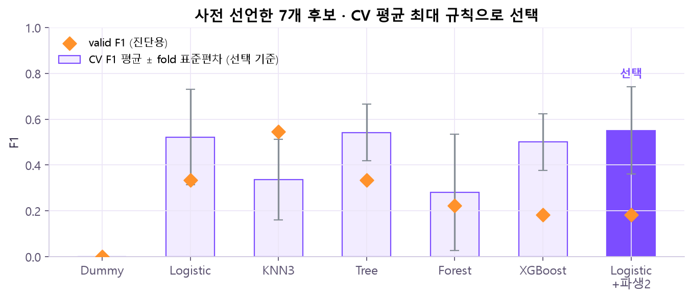
무엇을 보나: 위 표를 그림으로 옮겼어요. 막대가 CV F1 평균(선택 기준), 회색 수염이 fold 표준편차, 주황 마름모가 valid F1(진단용)이에요. 진한 보라 막대가 규칙대로 선택된 Logistic+파생2예요. 🤔 왜? 1등 막대(0.551)와 2등 Tree(0.542)의 차이는 수염 길이(약 0.12~0.19)보다 훨씬 작아요. 그리고 주황 마름모가 막대와 제각각 위치해 있죠 — 작은 자료라 평가 세트마다 순위가 바뀐다는 뜻이에요. 그래서 "규칙에 따른 선택"이지 "확실히 우월"이라고 쓰지 않아요.
🤔 왜 test를 열기 전에 잠그지? — test 점수를 본 뒤에 모델·특성·임계값을 바꾸면, test는 "고르는 데 쓴 자료"가 되어 버려요. 그럼 그 점수는 valid처럼 낙관적인 값이 되고, 진짜 처음 보는 자료에서의 성능을 알 방법이 사라져요. 그래서 무엇(후보·특성) · 어떻게(CV F1 최대, 동점 규칙) · 판단(임계값 0.5)을 먼저 파일로 남기고 test는 딱 한 번만 써요. valid도 이미 개발에 쓴 자료라 최종 독립 평가처럼 포장하지 않아요.
무엇을 보나: 가로 막대 한 줄이 한 단계이고, 칸 너비가 자료 건수예요. 회색 🔒 test 20은 1~3단계 내내 잠겨 있다가 4단계에서만 진하게 열려요. 🤔 왜? 고르는 데 쓴 자료의 점수는 낙관적이라, 한 번도 안 쓴 자료가 하나는 남아 있어야 정직한 마지막 점수를 얻어요. 2단계에서 설정을 파일로 먼저 잠그는 건, test를 본 뒤 "조금만 바꿔 보자"는 유혹을 막는 장치예요.
CV F1 최대 규칙으로 Logistic_FE 선택(Tree와의 약 0.009 차이를 확실한 우월성이라 주장하지 않음) → test 20건 결과: Acc 0.750 · Precision 0.600 · Recall 0.500 · F1 0.545 · AUC 0.786 (TN12 FP2 FN3 TP3, 실패 3/6 발견).
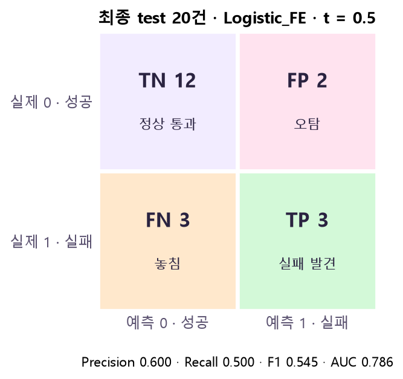
무엇을 보나: 잠근 설정(Logistic_FE, 임계값 0.5)으로 test 20건을 한 번 예측한 결과예요. 실제 실패 6건(아래 줄) 중 3건만 찾고(TP 3), 3건은 놓쳤어요(FN 3). 🤔 왜? AUC 0.786은 순위가 꽤 괜찮다는 뜻이지만, 놓친 3건은 확률이 0.5를 넘지 못했어요. 이 표가 이 모델의 최종 정직한 성적표라서, 마음에 안 든다고 임계값·모델을 바꿔 다시 재면 안 돼요 — 그 순간 test는 "고른 자료"가 돼요.
🤔 왜 마지막에 80건으로 다시 학습하지? — 선택이 끝나면 valid 20건은 더 이상 "고르는 데" 쓸 일이 없어요. 그 정보를 버리기 아까우니 train+valid 80건으로 같은 설정의 새 Pipeline을 학습해 최종 모델로 써요. 이때 clone으로 학습 상태 없는 새 객체를 만드는 이유는, 기존에 60건으로 학습된 상태(중앙값 등)가 섞이지 않게 하려는 거예요. 재학습 뒤 수치 중앙값이 1278 / 3, log 7.154, ratio 309.8로 바뀌는 건 정상이고, 80건 재학습 후의 과거 valid 성능은 더 이상 독립 검증 점수가 아니에요.
p = failure_scores(fitted, checked) # 새 범주가 있어도 (2, 10)으로 변환 · 확률은 유한값
check_input(new_requests.drop(columns="priority")) # ← ValueError가 나야 정상 (실패 시험)
지표로 진단하기
이렇게 나오면
의심할 것
Accuracy 높은데 Recall 0
다수 클래스만 찍는 모델 → 실제 양성 수 확인
AUC는 좋은데 F1 낮음
순위는 괜찮지만 임계값이 운영에 안 맞음
CV는 오르고 valid는 떨어짐 (0.522→0.551 / 0.333→0.182)
소표본 변동 → 개선 확정 금지
K를 늘릴수록 inertia만 계속 감소
당연한 현상 → silhouette·해석과 함께
새 범주 입력 / 필수 열 누락
새 범주는 handle_unknown="ignore"로 열 수 유지, 열 누락은 예측 전에 ValueError로 막기
원본 자료
강의: 20261028수_머신러닝_평가지표_특성설계_KMeans_최종평가_Day8 (2).pdf — ① 분류 지표 9~19쪽 · ② ROC-AUC·임계값 20~29쪽 · ③ RMSE·CV 집계 30~38쪽 · ④ 특성 설계 39~47쪽 · ⑤ K-Means 48~60쪽 · ⑥ 최종 평가 61~69, 73~77쪽